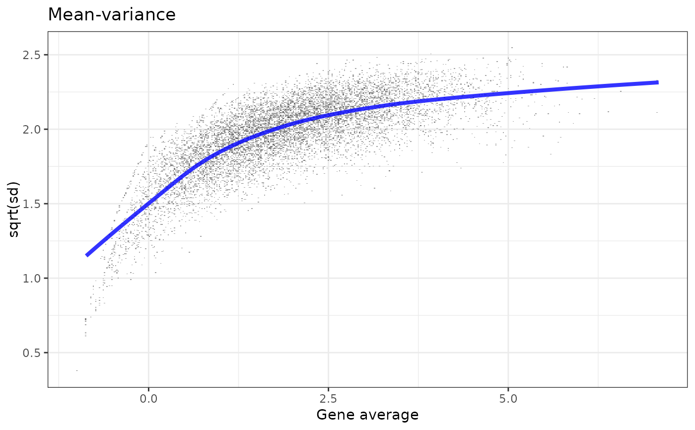
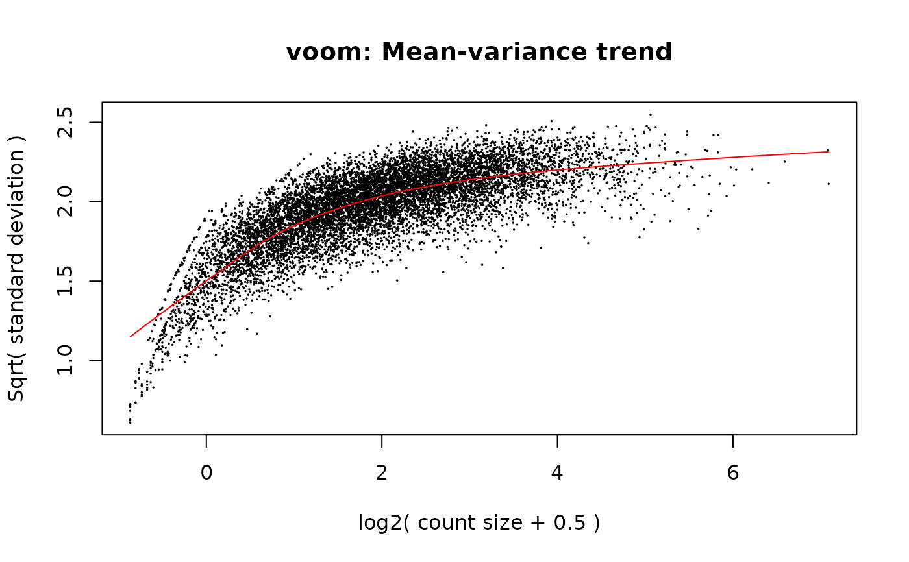

Precision weights accounting for heteroscedasticity in RNA-seq count data
Source:R/voom_weights.R
voom_weights.RdImplementation of the procedure described in Law et al. for estimating precision weights from RNA-seq data.
Arguments
- y
a matrix of size
G x ncontaining the raw RNA-seq counts or preprocessed expressions fromnsamples forGgenes.- x
a matrix of size
n x pcontaining the model covariates fromnsamples (design matrix).- preprocessed
a logical flag indicating whether the expression data have already been preprocessed (e.g. log2 transformed). Default is
FALSE, in which caseyis assumed to contain raw counts and is normalized into log(counts) per million.- lowess_span
smoother span for the lowess function, between 0 and 1. This gives the proportion of points in the plot which influence the smooth at each value. Larger values give more smoothness. Default is
0.5.- R
library.size (optional, important to provide if
preprocessed = TRUE). Default isNULL
References
Law, C. W., Chen, Y., Shi, W., & Smyth, G. K. (2014). voom: Precision weights unlock linear model analysis tools for RNA-seq read counts. Genome Biology, 15(2), R29.
Examples
set.seed(123)
G <- 10000
n <- 12
p <- 2
y <- sapply(1:n, FUN=function(x){rnbinom(n=G, size=0.07, mu=200)})
x <- sapply(1:p, FUN=function(x){rnorm(n=n, mean=n, sd=1)})
my_w <- voom_weights(y, x)
plot_weights(my_w)

if (requireNamespace('limma', quietly = TRUE)) {
w_voom <- limma::voom(counts=y, design=x, plot=TRUE)
#slightly faster, same results
all.equal(my_w$weights, w_voom$weights)
}

#> [1] TRUE
if(interactive()){
#microbenchmark::microbenchmark(limma::voom(counts=t(y), design=x,
# plot=FALSE), voom_weights(x, y),
# times=30)
}